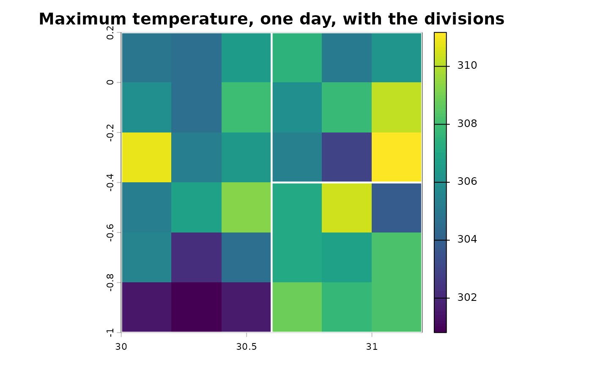

Administrative divisions
Source:vignettes/articles/administrative-divisions.Rmd
administrative-divisions.RmdWhen household coordinates are not available, or not precise enough,
the indicators are computed for the household’s administrative division:
every raster cell in the division contributes, weighted by the share of
the cell that lies inside it. This needs the exactextractr
and sf packages.
Reading the boundaries
read_boundaries() reads the FAO GAUL or geoBoundaries
files of one or more countries and returns the divisions with an
ID_adm_div identifier. To keep this article self-contained,
it writes a miniature GAUL folder first, from the three divisions that
ship with the package.
root <- file.path(tempdir(), "gaul")
dir.create(file.path(root, "MWI", "MWI_ADM2"), recursive = TRUE, showWarnings = FALSE)
divisions <- terra::vect(system.file("extdata", "adm_div.gpkg", package = "c4e"))
# GAUL's own field names
terra::values(divisions) <- data.frame(iso3_code = "MWI",
gaul1_name = divisions$adm_div_1,
gaul2_name = divisions$adm_div_2)
terra::writeVector(divisions, file.path(root, "MWI", "MWI_ADM2", "MWI_ADM2.geojson"),
filetype = "GeoJSON", overwrite = TRUE)
adm <- read_boundaries(root, iso = "MWI", level = 2)
adm
#> class : SpatVector
#> geometry : polygons
#> dimensions : 3, 4 (geometries, attributes)
#> extent : 30, 31.2, -1, 0.2 (xmin, xmax, ymin, ymax)
#> source : MWI_ADM2.geojson
#> coord. ref. : lon/lat WGS 84 (EPSG:4326)
#> names : ID_adm_div iso adm_div_1 adm_div_2
#> type : <chr> <chr> <chr> <chr>
#> values : 1 MWI West West A
#> 2 MWI East East South
#> 3 MWI East East North
tmax <- read_climate(system.file("extdata", "tmax_daily.tif", package = "c4e"))
#> Read tmax_daily: tmax [K], daily, 2021-01-01 to 2023-12-31, 1095 layers
#> (synthetic).
terra::plot(tmax[[200]], main = "Maximum temperature, one day, with the divisions")
terra::plot(adm, add = TRUE, border = "white", lwd = 2)
Cells of each division
extract_cell_by_poly() returns every cell of every
division with the share of the cell inside it
(coverage_fraction). Indicators are then computed cell by
cell, exactly as for households.
cells <- extract_cell_by_poly(convert_unit(tmax, "C"), adm)
cells[1:3, 1:7]
#> # A tibble: 3 × 7
#> # Context: tmax [C], day, wide; key ID_adm_div
#> ID_adm_div x_cell y_cell coverage_fraction `2021-01-01` `2021-01-02`
#> <chr> <dbl> <dbl> <dbl> <dbl> <dbl>
#> 1 1 30.1 0.1 1 18.7 19.8
#> 2 1 30.3 0.1 1 20.8 18.2
#> 3 1 30.5 0.1 1 17.0 22.5
#> # ℹ 1 more variable: `2021-01-03` <dbl>
hot <- calc_threshold_day(cells, above = 30)
#> Using `unit = "C"` from upstream unit.From cells to divisions
aggregate_to_adm() takes the coverage-weighted mean over
the cells of each division. A daily flag becomes the share of the
division’s area above the threshold that day.
by_division <- aggregate_to_adm(hot)
head(by_division, 4)
#> # A tibble: 4 × 4
#> # Context: tmax [C], day, long; key ID_adm_div; 2 indicators
#> ID_adm_div date day_abv_30 C_abv_30
#> <chr> <date> <dbl> <dbl>
#> 1 1 2021-01-01 0 0
#> 2 1 2021-01-02 0 0
#> 3 1 2021-01-03 0 0
#> 4 1 2021-01-04 0 0The daily table can be summarised by year or month with
summarise_by_period(), for a panel of divisions:
summarise_by_period(by_division, "year")
#> # A tibble: 9 × 4
#> # Context: tmax [C], year, long; key ID_adm_div; 2 indicators
#> ID_adm_div period day_abv_30_sum C_abv_30_sum
#> <chr> <date> <dbl> <dbl>
#> 1 1 2021-01-01 88.7 189.
#> 2 1 2022-01-01 88.7 185.
#> 3 1 2023-01-01 88.1 177.
#> 4 2 2021-01-01 133. 379.
#> 5 2 2022-01-01 134. 384.
#> 6 2 2023-01-01 134. 384.
#> 7 3 2021-01-01 133. 391.
#> 8 3 2022-01-01 130. 386.
#> 9 3 2023-01-01 135 395.Households in divisions
weather_extremes() does this in one call with
boundaries: each household gets the indicators of the
division its coordinates fall in.
survey <- read.csv(system.file("extdata", "survey.csv", package = "c4e"))
survey$interview <- as.Date(survey$interview)
heat <- weather_extremes(survey, system.file("extdata", "tmax_daily.tif", package = "c4e"),
id = hhid, interview = interview, preset = "heat",
boundaries = adm, control = extremes_control(verbose = FALSE))
#> Loading one raster block of data per layer requires approximately 1095 MB but the GDAL block size cache is only 799 MB. This is likely to result in very slow performance. It is recommended to increase the cache size using terra::gdalCache(new_size), reduce the number of layers in the input raster, or rewrite the input raster using a smaller chunk size.
print(heat, n = 4)
#> # A tibble: 20 × 14
#> # Context: tmax [C], day, summary; key hhid; 12 indicators
#> hhid lag day_abv_30_sum C_abv_30_sum day_abv_35_sum C_abv_35_sum
#> <chr> <int> <dbl> <dbl> <dbl> <dbl>
#> 1 HH01 0 88.5 178. 3.72 3.05
#> 2 HH02 0 134. 384. 19.7 21.9
#> 3 HH03 0 88.8 183. 4.11 3.30
#> 4 HH04 0 89.3 187. 4.67 3.43
#> # ℹ 16 more rows
#> # ℹ 8 more variables: spell_abv_30_max <dbl>, spell_abv_30_mean <dbl>,
#> # spell_abv_30_sum <dbl>, spell_abv_30_n <int>, spell_abv_35_max <dbl>,
#> # spell_abv_35_mean <dbl>, spell_abv_35_sum <dbl>, spell_abv_35_n <int>